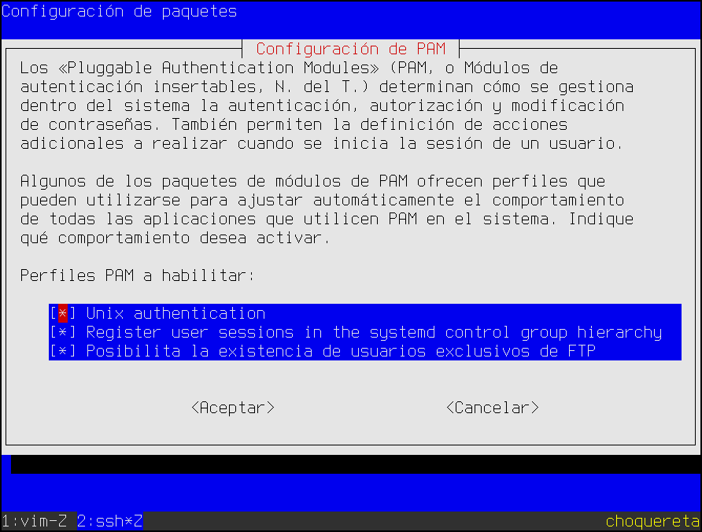

7.1.2. FTP clásico¶
Advertencia
Se recomienda encarecidamente implementar otra solución de transferencia de ficheros como sftp.
Para montar un clásico FTP utilizaremos el servidor vsftpd, que se jacta de ser el servidor FTP más seguro. Es, ciertamente, un servidor simple que procura mantener un número limitado de características en aras a lograr seguridad y rapidez.
7.1.2.1. Instalación¶
Es sencilla al encontrarse en los repositorios de debian:
# apt-get install vsftpd
Su configuración se encuentra dentro del directorio /etc/vsftpd.conf y,
por defecto, permite el acceso de los usuarios definidos en el sistema (los
validables haciendo uso de la autenticación con PAM) excepto los incluidos en
el fichero /etc/ftpusers, ya veremos por qué.
7.1.2.2. Configuración¶
Básicamente consiste en modificar el valor de las directivas existentes, descomentar otras y añadir algunas que no aparecen, según nuestras necesidades. Intentaremos agrupar la explicación de algunas según el proposito que busquemos.
7.1.2.2.1. Escucha¶
vsftpd soporta tanto ser requerido por un superservidor tipo inetd como estar a la escucha constantemente
(lo que se conoce como standalone). A este efecto tiene dos directivas
listen y listen_ipv6:
|
|
Descripción del efecto |
|---|---|---|
NO |
NO |
Arrancado con xinetd o similar[1] |
YES |
NO |
Acepta sólo tráfico IPv4. |
NO |
YES |
Acepta tráfico IPv4 y tráfico IPv6. |
YES |
YES |
Error. No es posible la combinación. |
Por otra parte, hay ciertas directivas relacionadas con los puertos que se usarán para la conexión:
- listen_port
para definir qué puerto de escucha usa el canal de control, si es que se quiere usar un puerto distinto al 21.
- connect_from_port_20
que define desde qué puerto abre el servidor el canal de datos, si se utiliza el modo activo. Su valor predeterminado es NO, lo cual quiere decir que vsftpd abrirá la conexión usando un puerto al azar, en vez del 20. Que el servidor prefiera usar un puerto distinto al visto en la teoría se debe a que el 20 es un puerto privilegiado y, por tanto, sólo puede iniciar conexión el administrador. Eso obliga a ejecutar el servidor como administrador lo cual es un riesgo de seguridad. En principio, los clientes deberían admitir que el puerto de datos no fuera el 20, así que no deberíamos tocar esta configuración.
- ftp_data_port
Si la directiva anterior se definió como YES, define cuál es el puerto para abrir el canal de datos en modo activo. Por defecto, claro está, su valor es 20.
- pasv_min_port/pasv_max_port
Son dos directivas que permiten definir un límite inferior y un límite superior para el puerto que se indicará al cliente que utilice al abrir el canal de datos en el modo pasivo. Esto podría ayudar a la configuración del cortafuegos.
Ver también
En uno de los epígrafe dedicado a la configuración del cortafuegos hay una sección dedicada a la configuración del cortafuegos con servidores FTP. Esta configuración evita usar estas dos directivas, pero a costa de obligar al cortafuegos a hacer un seguimiento de las conexiones FTP.
7.1.2.2.2. Acceso anónimo¶
Los servidores, tradicionalmente, han permitido el acceso anónimo al servidor, esto es, la posibilidad de identificarse en el sistema sin tener asignado un usuario. Generalmente, exigen que se indique como usuario anonymous y como contraseña cualquier cadena, aunque en origen se indicaba el correo electrónico del usuario.
Para habilitar el acceso anónimo es necesario hacer:
anonymous_enable=YES
que configura un acceso con estas características:
El usuario anónimo se corresponde con el usuario local ftp.
Sólo se tiene permisos de lectura (o sea, sólo puede ver los ficheros disponibles y descargar aquellos que le interesen).
Se accede al directorio
/srv/ftpy se está enjaulado en él, es decir, es imposible salir de él.
Para modificar este comportamiento predeterminado hay otras directivas:
anon_root=/otro/directorio/distinto
que permite modificar el directorio de enjaulado del usuario anónimo.
Advertencia
El usuario, en este caso ftp, no puede tener permisos de escritura sobre el directorio en el que se enjaula.
anon_upload_enable=YES
permite subir ficheros. Se requiere también, no obstante, habilitada la
directiva write_enable. Véase más adelante el permiso de escritura para
usuarios locales.
anon_mkdir_write_enable=YES
anon_other_write_enable=YES
estas directivas permiten respectivamente la creación de nuevos subdirectorios y otros permisos de escritura (como borrado o renombrado).
Advertencia
Hay dos directivas cuyo valores predeterminados (que son los que se indican a continuación) cobran especial interés cuando se permite la subida anónima de archivos al servidor:
anon_world_readable_only=YES
anon_umask=077
El primero obliga a que el archivo sólo pueda descargarse si es universalmente accesible (o sea, todos los usuarios tengan permiso de lectura), mientras que el segundo determina que los archivos subidos anónimamente tengan permisos 600. La consecuencia es que esos archivos subidos anónimamente, no serán descargables luego por un acceso anónimo.
7.1.2.2.3. Usuarios locales¶
Los usuarios locales, esto es, los usuarios registrados y con capacidad de autenticación en el sistema, están habilitado por defecto gracias a la directiva:
local_enable=YES
Al ingresar en el sistema entraran en su directorio personal, pero a diferencia del usuario anónimo, tienen libertad para consultar todo la parte del sistema de ficheros accesible según sus permisos, en vez de estar enjauladas dentro de él. Más adelante veremos cómo alterar esto. Para habilitar sus permisos de escritura es necesaria la directiva:
write_enable=YES
No obstante lo anterior, es posible alterar el directorio de ingreso mediante la directiva:
local_root=/home
que provocaría que todos los usuarios locales accedieran a /home/ en vez
de a su directorio personal. No obstante, puede particularizarse el valor de esta
directiva ayudándose de user_sub_token, del siguiente modo:
user_sub_token=$USER
local_root=/srv/ftp/$USER
de este modo, cada usuario podrá estar localizado en un directorio diferente sin ser el que indica su información de usuario.
Otra forma de particularizar, aunque en este caso no sólo para indicar el
directorio de usuario es la directiva user_config_dir que permite definir un
directorio de configuraciones personalizadas. Si un fichero de ese directorio
tiene el nombre de un usuario, se cargara la configuración contenida en él para
ese usuario. Por ejemplo:
user_config_dir=/etc/vsftpd
y además creamos el fichero:
# cat > /etc/vsftpd/pepe
local_root=/srv/ftp/pepe_es_un_chico_especial
write_enable=NO
local_max_rate=10024
Al usuario pepe y sólo a él, se le aplican las directivas incluidas en el fichero, que sobreescribirán a la que puedan encontrarse en el fichero general.
7.1.2.2.4. Enjaulado¶
Los usuarios locales también pueden ser enjaulados:
chroot_local_user=YES
No obstante, la configuración nos permite establecer un fichero de excepciones a la política predeterminada con:
chroot_list_enable=YES
chroot_list_file=/etc/vsftpd.jail
En tal fichero, puede incluirse los usuarios, uno por línea, que no siguen la
política de enjaulamiento general. Es importante, entender que estos usuarios
son la excepción, por lo que representan los enjaulados si chroot_local_user
está deshabilitado y los no enjaulados, si está habilitada.
Un aspecto muy importante al enjaular los usuarios es que
Advertencia
Por motivos de seguridad, el usuario enjaulado no puede tener permisos de escritura sobre el directorio de enjaulamiento.
Esto provoca un problema, sobre todo para usuarios locales, porque lo habitual es que los usuarios requieran permisos de escritura sobre sus propios directorios, si acceden al sistema por otros medios. En principio, tenemos cuatro posibles soluciones:
Enjaular a los usuarios dentro de
/home, para lo cual basta con:local_root=/homeEsta solución tiene la desventaja de que el usuario puede ver qué usuarios están definidos en el sistema y dependiendo de los permisos de los directorios del resto, podría meterse en algunos ajenos.
Eliminar los permisos de escritura de los directorios personales, lo cual puede llegar a ser un problema, si los usuarios acceder con otros servicios (SSH, por ejemplo).
Enjaular al usuario en un directorio exclusivo distinto al personal. Tiene dos variantes:
Que el directorio nada tenga que ver el directorio personal:
user_sub_token=$USER local_root=/srv/ftp/$USER
si suponemos claro, que los directorios personales son los habituales
/home/nombre_usuario.Otra variante es hacer que el directorio de enjaulamiento sea un subdirectorio del directorio personal:
user_sub_token=$USER local_root=/home/$USER/ftp
Nota
Por supuesto, si queremos subir ficheros, será necesario haber creado un subdirectorio dentro con permisos de escritura. Por ejemplo:
$ mkdir -p ~/ftp/incoming $ chmod 555 ~/ftp
Añadir la opción (no documentada en la página de manual):
allow_writeable_chroot=YESque, directamente, permite enjaular a un usuario dentro de un directorio en el que tiene permisos de escritura. La directiva apareció en la versión 2.3.5, después que desde la versión 2.3.4 se pasara a comprobar el permiso de escritura sobre el directorio de la jaula. Esto, sin embargo, se desaconseja, porque hace vulnerable el servidor a un ataque contra su seguridad. En cualquier caso, esta directiva sólo se aplica a usuarios no anónimos.
7.1.2.2.5. Restricciones de acceso¶
Entendemos por ello la posibilidad de prohibir el acceso FTP a ciertos usuarios, que en principio tienen acceso al servidor. Para lograrlo hay dos vías:
Cambiar la configuración del servidor (o sea editar
/etc/vsftpd.conf).Influir en el proceso de autenticación, que es una herramienta más poderosa y da pie a una restricción mucho más rica.
Analicemos ambas vías.
7.1.2.2.5.1. Mediante configuración¶
Las directivas:
userlist_enable=YES
userlist_file=/etc/vsftpd.userlist
permiten definir un fichero en el que pueden incluirse usuarios a los que se quiere o negar o permitir en exclusividad el acceso. Que nuestra política de accesos sea de lista blanca o negra depende del valor de otra directiva:
userlist_deny=NO
Deshabilitada, la política será de lista blanca y el fichero contendrá los únicos usuarios capaz de usar el servidor; habilitada la política será de lista negra.
Nota
Nótese que sólo permite la inclusión de nombres de usuario, no de grupos. Para una configuración más flexible debe optarse por manipular la autenticación.
7.1.2.2.5.2. Mediante autenticación¶
vsftpd se vale para la autenticación con pam para
permitir el acceso al servidor. De hecho, la directiva pam_service_name nos
permite indicar cuál es el nombre del servicio para PAM. Su valor
predeterminado es vsftpd y es es la razón por la que existe
/etc/pam.d/vsftpd para controlar la autenticación:
# Standard behaviour for ftpd(8).
auth required pam_listfile.so item=user sense=deny file=/etc/ftpusers onerr=succeed
# Note: vsftpd handles anonymous logins on its own. Do not enable pam_ftp.so.
# Standard pam includes
@include common-account
@include common-session
@include common-auth
auth required pam_shells.so
Este es un contenido. Como vemos a la autenticación común a todos los servicios, se añaden dos requisitos más:
Que el usuario tenga definida una shell válida (módulo pam_shell.so).
Que el usuario no este listado en el fichero
/etc/ftpusers. Esa es la razón la qu el usuario administrador no puede acceder por FTP al servidor:# grep root /etc/ftpusers root
La restricción en el acceso mediante este método puede ser tanta como nos permita nuestro conocimiento de PAM. Por ejemplo, podríamos añadir una primera línea como esta:
auth required pam_listfile.so item=group sense=allow file=/etc/ftpgroups onerr=succeed
que permitiría crear un fichero donde incluyéramos los grupos de usuarios a los que exclusivamente permitiéramos el acceso al FTP. Si esto lo complementáramos con:
# cat > /etc/ftpgroups
ftpusers
resultaría en que sólo los usuarios pertenecientes al grupo ftpusers serán capaces de acceder al servidor.
7.1.2.2.6. Limitaciones de uso¶
Disponemos de toda una serie de directivas relacionadas con las limitaciones de uso del servidor:
local_max_rate=10240
permitir limitar la velocidad en bytes/segundo a la que los usuarios locales pueden subir o bajar ficheros:
max_clients=5
limita el número máximo de conexiones simultáneas; mientras que:
max_per_ip=2
limita el númnero máximo de conexiones por IP. En ambos casos, 0 significa que no hay límite y justamente ése es el valor predeterminado.
En principio, no hay directiva para limitar el acceso por usuarios (o grupos), pero la directiva:
session_support=YES
provoca que la sesión se apunte en /var/log/wtmp y, consecuentemente,
que las limitaciones maxlogins y maxsyslogins propiciadas por el módulo
pam_limits.so tengan efecto. Para ver cómo hacerlo, puede consultar la
discusión sobre limitaciones al acceso SSH.
7.1.2.2.7. Conexión segura¶
Como todos los viejos protocolos, FTP no presta atención a la seguridad y la contraseña viaja en claro a través de la red. Para subsanarlo es posible embucharlo en una negociación SSL (o TLS como se prefiera decir), para lo cual se requiere antes la creación de un certificado digital.
Nota
Consulte la creación de un certificado que se expone en la parte dedicada al tráfico web. Sirve tanto el certificado autofirmado como el obtenido con Let’s Encrypt.
Obtenido el certificado, podemos optar por cifrar:
ambos canales o sólo el canal de control y no el de datos.
sólo la conexión para los usuarios locales o también para el usuario anónimo.
Un ejemplo de configuración en el que intervienen las directivas relativas a la seguridad es esta:
# Sólo ciframos comunicación de los usuarios locales.
ssl_enable=YES
allow_anon_ssl=NO
# Sólo forzamos el cifrado del canal de control
force_local_data_ssl=NO
force_local_logins_ssl=YES
# Ciframos usando TTLv1.0 que es más seguro que SSLv3
ssl_tlsv1=YES
ssl_sslv2=NO
ssl_sslv3=NO
# Certificado digital (suponemos el autofirmado)
rsa_cert_file=/etc/ssl/certs/ssl-cert-snakeoil.pem
rsa_private_key_file=/etc/ssl/private/ssl-cert-snakeoil.key
Nota
También hay un force_anon_data_ssl y un force_anon_logins_ssl
para cifrar de manera independiente los canales de control y datos de la
conexión anónima.
Nota
Con esta configuración, vsftpd usa cifrado explícito (llamado
FTPES), es decir, hay una negociación previa en la que el servidor
obliga al cliente a que cifre el canal de control (debido al valor de
force_local_logins_ssl ) y se cifre con TLS (véase STARTTLS). Tambien éxiste el cifrado implícito (FTPS), que es más
antiguo y se habilita con la opción:
implicit_ssl=YES
listen_port=990
y en el que no hay negociación previa, sino que directamente se establece el protocolo TLS para asegurar la comunicación y dentro de él se comienza una sesión FTP tradicional. Cuando se usa este segundo método de cifrado, la escucha se suele hacer por el puerto 990, de ahí que hayamos incluido la directiva para cambiar el puerto de escucha.
Cuando se usa FTPES, no es necesario declarar nada, puesto que la escucha es el el puerto 21 y el cifrado es consecuencia de una negociación. Con el implícito, en cambio, si que es necesario declararlo (generalmente con ftps://) ya que el cliente tiene que cambiar de puerto y además empezar directamente el protocolo TLS. En cualquier caso, lo recomentable es usar FTPES.
Advertencia
Al cifrar la comunicación, necesitaremos un cliente que la soporte. El cliente FTP habitual en los UNIX no lo hace. Podemos, en su sustitución, usar ftp-ssl, o lftp que, además de soportar cifrado, tiene una interfaz de texto mucho más potente. En entorno gráfico (y sistemas Windows), FileZilla soporta tanto FTPES como FTPS.
7.1.2.3. Cuota¶
Ver también
Consulte cómo crear cuotas de disco.
7.1.2.4. Usuarios virtuales¶
Hasta ahora hemos configurado el servidor para que sea utilizado por usuarios que, además, tienen acceso al resto de servicios. El propósito, a partir de ahora, es crear usuarios cuyo único propósito es el acceso al FTP, por lo que no serán válidos para el resto de los servicios.
Haremos dos aproximaciones.
7.1.2.4.1. Falsamente virtuales¶
Los denominados falsamente virtuales, porque no son virtuales, ya que son usuarios que realmente existen en el sistema ,es decir, que getent passwd los reconoce. A pesar de ello, manipulamos la autenticación para que sean incapaces de autenticarse en ningún otro servicio. La tarea, por tanto, se reduce a configurar PAM para lograrlo.
Lo primero es caracterizar a tales usuarios de manera que sólo ellos cumplan el requisito que establezcamos. Por ejemplo, que sean los únicos que se encuentren dentro de un rango de UIDs o que los únicos que pertenecen a un grupo determinado. Este último criterio es el más fácil de implementar así que crearemos un grupo nuevo:
$ addgroup --system ftponly
y añadiremos a él los usuarios de FTP falsamente virtuales.
Una manera bastante limpia de impedirle el acceso al resto de usuarios es crear
este fichero en
/usr/share/pam-configs/ftponly:
Name: Posibilita la existencia de usuarios exclusivos de FTP
Default: no
Priority: 0
Account-Type: Additional
Account:
[success=1 default=ignore] pam_succeed_if.so service = vsftpd
required pam_listfile.so item=group sense=deny onerr=succeed file=/etc/vftpusers
required pam_permit.so
Esto propicia que ejecutando pam-auth-update:
podamos añadir (o quitar) cómodamente las siguientes líneas a
/etc/pam.d/common-account:
account [success=1 default=ignore] pam_succeed_if.so service = vsftpd
account required pam_listfile.so item=group sense=deny onerr=succeed file=/etc/ftponly
account required pam_permit.so
que impide que cualquier usuario perteneciente a un grupo incluido en el fichero
/etc/ftponly pueda autenticarse en un servicio que no sea vsftpd[2]. Por supuesto, deberemos añadir el grupo ftponly al fichero:
# echo "ftponly" > /etc/ftponly
7.1.2.4.2. Realmente virtuales¶
Como sí son virtuales, no existen en el sistema, sino únicamente en la autenticación del servidor FTP. Esto provoca que no tengan más que un nombre de usuario y una contraseña, y que carezcan del resto de características que requiere un usuario real (UID, grupo principal, etc.). Consecuentemente, el servidor debe mapear los usuarios virtuales a un usuario real cuando estos realizan una acción en el servidor (p.e. crear un fichero en el sistema de fichero al subirlo).
Para utilizar usuarios realmente virtuales son necesarias tres tareas diferenciadas:
Crear y almacenar sus nombres y contraseñas.
Manipular la autenticación.
Configurar vsftpd para poder utilizarlos.
7.1.2.4.2.1. Creación¶
Para la creación de los usuarios podemos crear una base de datos Berkeley
(para luego usarla con pam_userdb.so), o un fichero con formato semejante al
de /etc/passwd.
Usaremos el primer método[3] para lo cual, debe seguirse lo expuesto para la creación de usuarios del correo electrónico.
7.1.2.4.2.2. Autenticación¶
Basta con añadir las dos siguientes líneas al comienzo de
/etc/pam.d/vsftpd:
# Usuarios virtuales
auth sufficient pam_userdb.so db=/etc/vsftpd_users crypt=crypt
account sufficient pam_userdb.so db=/etc/vsftpd_users
7.1.2.4.2.3. Configuración¶
Los usuarios virtuales son llamados invitados en la configuración. Para
habilitarlos es necesario al menos incluir en /etc/vsftpd.conf:
guest_enable=YES
que provoca que los usuarios se mapeen al usuario que indique guest_username
y que por defecto es ftp. Pero:
Advertencia
Todos los usuarios, incluidos los reales, se mapean.
Además, los usuarios se tratan como el usuario anónimo: enjaulamiento, permisos, etc. Si se quiere que se traten tal como indican las directivas relativas a usuarios locales debe incluirse:
virtual_use_local_privs=YES
Nota
Al mapearse todos los usuarios a ftp, el directorio de ingreso será
/srv/ftp que es el directorio personal de tal usuario. Lo que puede
hacerse para subsanarlo es particularizar el directorio de ingreso con alguno
de los métodos ya descritos, por ejemplo:
user_sub_token=$USER
local_root=/home/$USER
Notas al pie